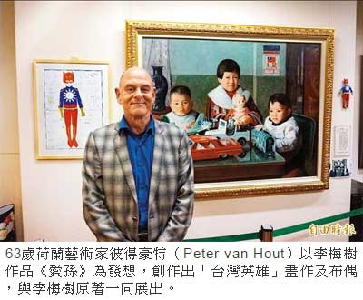

作台灣英雄 荷蘭藝術家向李梅樹致敬
張安蕎｜自由時報／新北都會生活｜2015年12月3日
一名女童身穿青藍色緊身制服，胸前是象徵國徽的十二道光芒，頭盔上則寫著數字十二，代表國父孫中山的化身，這位「台灣英雄」是六十三歲荷蘭藝術家彼得豪特（Peter van Hout）創造的人物，除了向愛國藝術家李梅樹致敬，他也想藉此傳達，「我愛台灣！」
「我愛台灣的自由、台灣人的堅強」，彼得豪特說，小時候曾在課本讀到荷蘭殖民台灣事件，長大後看台灣歷史，才發現小小一個台灣，卻經歷二次大戰、白色恐怖等大事件，他將這些歷史年份寫在「台灣英雄」的畫作背景中，向外界告知「每個台灣人都是無名英雄」。
鑽研李梅樹作品及思想
「台灣英雄」的創作，受到李梅樹作品《愛孫》的啟發，彼得豪特說，七年前他來台經商時，無意間在報紙上看到李梅樹的畫作，自此深深著迷，開始鑽研李梅樹的作品及思想，他曾夢見已逝世多年的李梅樹和他暢談藝術理念，更在夢裡收他為徒。
一系列作品融合台荷特色
為了向李梅樹致敬，他以李梅樹的作品為發想，創作一系列融合台灣與荷蘭特色的作品，每一件新作都掛在原作前，觀賞者可從中比較兩者異同之妙，至明年一月十七日止，在李梅樹紀念館展出。